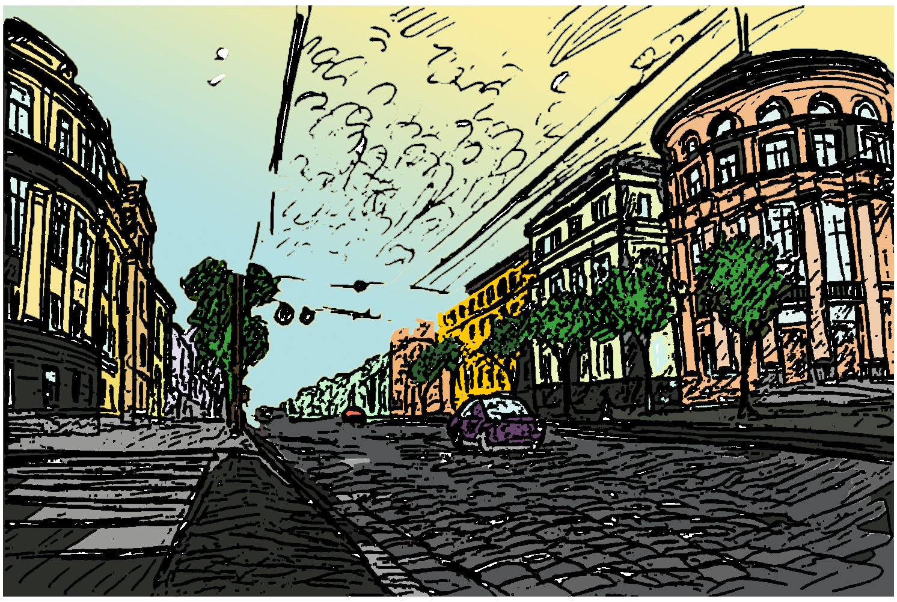
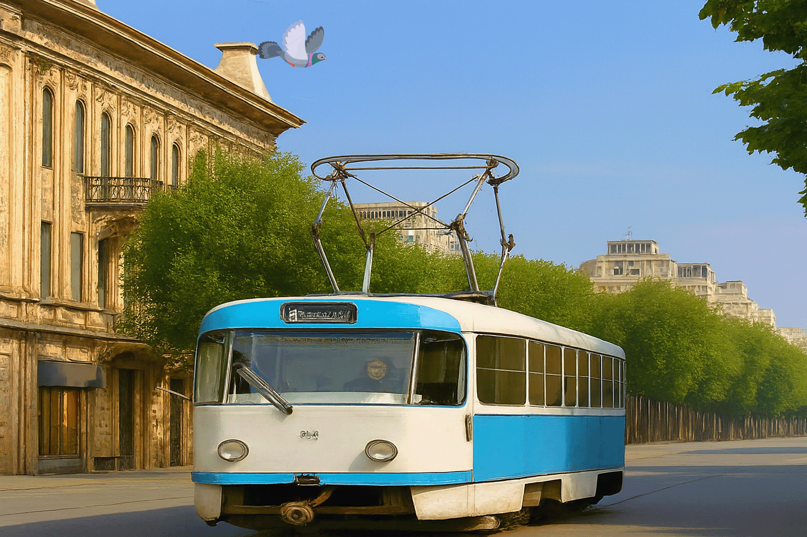
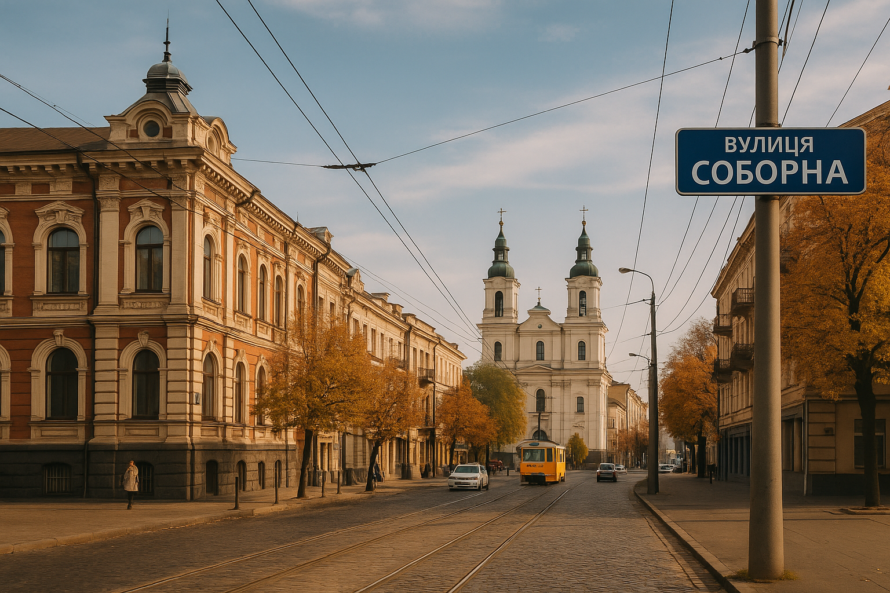

Історія вулиці Соборної
Вулиця Соборна сформувалась у другій половині XIX століття як одна з головних магістралей Вінниці. З розвитком торгівлі та транспорту вона перетворилась на центральну вулицю міста: тут з'явились крамниці, театри та установи. У міжвоєнний період багато будівель набули рис архітектури модерн. Після Другої світової війни вулицю реконструювали, з'явились нові фасади та громадські простори. Сьогодні Соборна — важливий осередок міського життя, де поєднуються історія та сучасність.
Хронологія (коротко)
- 1860 — перша згадка про шлях, що став основою майбутньої Соборної.
- 1890–1910 — інтенсивна забудова в стилі класицизму та модерн.
- 1920–1930 — розвиток торгівлі та громадських установ.
- 1945–1960 — відбудова після війни, оновлення фасадів.
- 1990–дотепер — реконструкції, пішохідні зони, культурні події.
Архівні фото




Історія вулиці Соборної
Коротка довідка
Вулиця Соборна — головна артерія Вінниці, яка пройшла крізь імперії, революції та модернізацію. Вона змінювала назви десятки разів, відображаючи політичні епохи: Велика, Поштова, Миколаївський проспект, Леніна, і з 1996 року — Соборна.
Оновлено: 2025